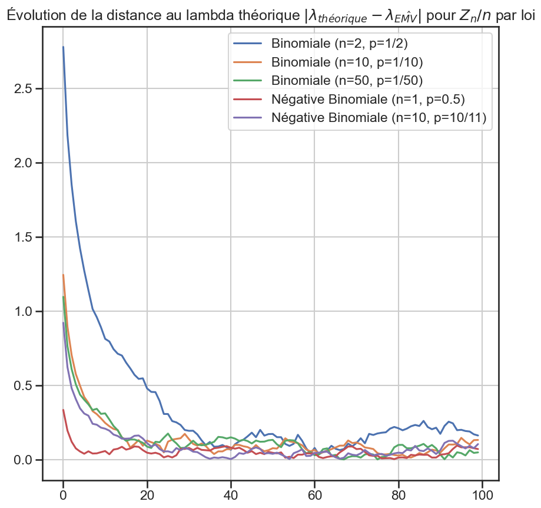

1import matplotlib.pyplot as plt
2import numpy as np
3import pandas as pd
4import seaborn as sns
5from src.code.simulation.galton_watson import SimulateurGaltonWatson
6from src.code.simulation.probability_distributions import (
7 create_distributions,
8 create_distributions_df,
9)
10from src.code.simulation.utils import test_loi_exponentielle
11from src.code.simulation.yaglom import simulation_yaglom_toutes_lois
12from src.config.config import seed
13from src.utils.utils import init_notebook
1init_notebook(seed)
Théorème de Yaglom#
Mise au propre Yaglom#
1distributions = create_distributions()
1alpha = 0.05
2nb_processus = 30_000
3taille_pas = 2
4nb_repetitions = 100
1p_value_dict, ks_dict, lambda_dict = simulation_yaglom_toutes_lois(
2 distributions,
3 nb_processus,
4 taille_pas,
5 nb_repetitions,
6)
---------------------------------------------------------------------------
KeyboardInterrupt Traceback (most recent call last)
Cell In[5], line 1
----> 1 p_value_dict, ks_dict, lambda_dict = simulation_yaglom_toutes_lois(
2 distributions,
3 nb_processus,
4 taille_pas,
5 nb_repetitions,
6 )
File ~/work/epidemic-simulation/epidemic-simulation/src/code/simulation/yaglom.py:85, in simulation_yaglom_toutes_lois(distributions, nb_processus, taille_pas, nb_repetitions)
82 lambda_dict: dict[str, list[float]] = {}
84 for nom_loi, loi in distributions.items():
---> 85 p_value, ks, lambda_ = simulation_yaglom(
86 loi,
87 nb_processus=nb_processus,
88 taille_pas=taille_pas,
89 nb_repetitions=nb_repetitions,
90 )
92 p_value_dict[nom_loi] = p_value
93 ks_dict[nom_loi] = ks
File ~/work/epidemic-simulation/epidemic-simulation/src/code/simulation/yaglom.py:48, in simulation_yaglom(loi, nb_processus, taille_pas, nb_repetitions, taille_echantillon, affichage)
45 sim = SimulateurGaltonWatson(loi, nb_processus=nb_processus)
47 for i in range(nb_repetitions):
---> 48 sim.simule(nb_epoques=taille_pas)
49 sim.retire_processus_eteints()
51 zn_sur_n = sim.get_zn_sur_n()
File ~/work/epidemic-simulation/epidemic-simulation/src/code/simulation/galton_watson.py:207, in SimulateurGaltonWatson.simule(self, nb_epoques)
205 def simule(self, nb_epoques: int = 10) -> None:
206 for i in range(self.nb_processus):
--> 207 self.simulations[i].simule(nb_epoques)
File ~/work/epidemic-simulation/epidemic-simulation/src/code/simulation/galton_watson.py:60, in GaltonWatson.simule(self, nb_epoques)
57 epoque_actuelle = 0
59 while epoque_actuelle < nb_epoques and self.nb_descendants > 0:
---> 60 liste_descendants = self.loi.rvs(size=self.nb_descendants)
61 self.liste_descendants.append(liste_descendants)
63 self.nb_descendants = np.sum(liste_descendants)
File ~/work/epidemic-simulation/epidemic-simulation/.venv/lib/python3.14/site-packages/scipy/stats/_distn_infrastructure.py:544, in rv_frozen.rvs(self, size, random_state)
542 kwds = self.kwds.copy()
543 kwds.update({'size': size, 'random_state': random_state})
--> 544 return self.dist.rvs(*self.args, **kwds)
File ~/work/epidemic-simulation/epidemic-simulation/.venv/lib/python3.14/site-packages/scipy/stats/_distn_infrastructure.py:3501, in rv_discrete.rvs(self, *args, **kwargs)
3472 """Random variates of given type.
3473
3474 Parameters
(...) 3498
3499 """
3500 kwargs['discrete'] = True
-> 3501 return super().rvs(*args, **kwargs)
File ~/work/epidemic-simulation/epidemic-simulation/.venv/lib/python3.14/site-packages/scipy/stats/_distn_infrastructure.py:1113, in rv_generic.rvs(self, *args, **kwds)
1111 args, loc, scale, size = self._parse_args_rvs(*args, **kwds)
1112 cond = logical_and(self._argcheck(*args), (scale >= 0))
-> 1113 if not np.all(cond):
1114 message = ("Domain error in arguments. The `scale` parameter must "
1115 "be positive for all distributions, and many "
1116 "distributions have restrictions on shape parameters. "
1117 f"Please see the `scipy.stats.{self.name}` "
1118 "documentation for details.")
1119 raise ValueError(message)
File ~/work/epidemic-simulation/epidemic-simulation/.venv/lib/python3.14/site-packages/numpy/_core/fromnumeric.py:2634, in all(a, axis, out, keepdims, where)
2548 @array_function_dispatch(_all_dispatcher)
2549 def all(a, axis=None, out=None, keepdims=np._NoValue, *, where=np._NoValue):
2550 """
2551 Test whether all array elements along a given axis evaluate to True.
2552
(...) 2632
2633 """
-> 2634 return _wrapreduction_any_all(a, np.logical_and, 'all', axis, out,
2635 keepdims=keepdims, where=where)
File ~/work/epidemic-simulation/epidemic-simulation/.venv/lib/python3.14/site-packages/numpy/_core/fromnumeric.py:97, in _wrapreduction_any_all(obj, ufunc, method, axis, out, **kwargs)
95 pass
96 else:
---> 97 return reduction(axis=axis, out=out, **passkwargs)
99 return ufunc.reduce(obj, axis, bool, out, **passkwargs)
File ~/work/epidemic-simulation/epidemic-simulation/.venv/lib/python3.14/site-packages/numpy/_core/_methods.py:70, in _all(a, axis, dtype, out, keepdims, where)
68 # Parsing keyword arguments is currently fairly slow, so avoid it for now
69 if where is True:
---> 70 return umr_all(a, axis, dtype, out, keepdims)
71 return umr_all(a, axis, dtype, out, keepdims, where=where)
KeyboardInterrupt:
1p_value_df = pd.DataFrame(p_value_dict)
2ks_df = pd.DataFrame(ks_dict)
3lambda_df = pd.DataFrame(lambda_dict)
1p_value_df.to_csv("data/results/p-value-evolution.csv", index=False)
2ks_df.to_csv("data/results/ks-evolution.csv", index=False)
3lambda_df.to_csv("data/results/lambda-evolution.csv", index=False)
1p_value_df = pd.read_csv("data/results/p-value-evolution.csv")
2ks_df = pd.read_csv("data/results/ks-evolution.csv")
3lambda_df = pd.read_csv("data/results/lambda-evolution.csv")
1distributions_df = create_distributions_df()
1lambda_array = np.array(distributions_df["Lambda théorique loi exponentielle Z_n / n"])
Graphiques#
p-values#
Toutes les lois de reproduction#
1periode_lissage = 15
2
3p_value_df.rolling(window=periode_lissage).mean().plot(figsize=(15, 10))
4plt.title(
5 "Évolution des p-values (test KS loi exponentielle) pour $Z_n / n$ par loi"
6 f"\n(lissé avec une fenêtre de taille {periode_lissage})",
7)
8plt.plot(
9 list(range(periode_lissage, nb_repetitions)),
10 [alpha for _ in range(periode_lissage, nb_repetitions)],
11 label=r"$\alpha = 0.05$",
12 color="black",
13 linestyle="dashed",
14)
15plt.legend()
16plt.savefig("assets/img/p-values-evolution-all-laws.png")
17plt.savefig("assets/img/p-values-evolution-all-laws.svg")
Lois de reproduction groupées#
1groupe1 = [
2 "Poisson (λ = 1)",
3 "Uniforme {0, 1, 2}",
4 "Hyper-Géométrique (N=10, n=2, p=0.5)",
5 "Hyper-Géométrique (N=100, n=10, p=0.1)",
6]
7
8groupe2 = [
9 "Binomiale (n=2, p=1/2)",
10 "Binomiale (n=10, p=1/10)",
11 "Binomiale (n=50, p=1/50)",
12 "Négative Binomiale (n=1, p=0.5)",
13 "Négative Binomiale (n=10, p=10/11)",
14]
15
16groupe3 = [
17 "Bêta-Binomiale (n=2, α=3, β=3)",
18 "Bêta-Binomiale (n=5, α=5, β=20)",
19 "Bêta-Binomiale (n=3, α=5, β=10)",
20 "Bêta-Binomiale (n=10, α=5, β=45)",
21]
1periode_lissage = 15
2
3p_value_df["Hyper-Géométrique (N=100, n=10, p=0.1)"].rolling(
4 window=periode_lissage,
5).mean().plot(figsize=(10, 10))
6
7plt.title(
8 "Évolution de la p-value (test KS loi exponentielle) pour $Z_n / n$"
9 f"\n(lissé avec une fenêtre de taille {periode_lissage})",
10)
11plt.plot(
12 list(range(periode_lissage, nb_repetitions)),
13 [alpha for _ in range(periode_lissage, nb_repetitions)],
14 label=r"$\alpha = 0.05$",
15 color="black",
16 linestyle="dashed",
17)
18plt.legend()
19plt.savefig("data/plots/evolution/p-value-hypergeom.png")
1periode_lissage = 15
2
3p_value_df[groupe1].rolling(window=periode_lissage).mean().plot(figsize=(10, 10))
4
5plt.title(
6 "Évolution des p-values (test KS loi exponentielle) pour $Z_n / n$ par loi"
7 f"\n(lissé avec une fenêtre de taille {periode_lissage})",
8)
9plt.plot(
10 list(range(periode_lissage, nb_repetitions)),
11 [alpha for _ in range(periode_lissage, nb_repetitions)],
12 label=r"$\alpha = 0.05$",
13 color="black",
14 linestyle="dashed",
15)
16plt.legend()
17plt.savefig("data/plots/evolution/p-value-group1.png")
1periode_lissage = 15
2
3p_value_df[groupe2].rolling(window=periode_lissage).mean().plot(figsize=(10, 10))
4
5plt.title(
6 "Évolution des p-values (test KS loi exponentielle) pour $Z_n / n$ par loi"
7 f"\n(lissé avec une fenêtre de taille {periode_lissage})",
8)
9plt.plot(
10 list(range(periode_lissage, nb_repetitions)),
11 [alpha for _ in range(periode_lissage, nb_repetitions)],
12 label=r"$\alpha = 0.05$",
13 color="black",
14 linestyle="dashed",
15)
16plt.legend()
17
18plt.savefig("data/plots/evolution/p-value-group2.png")
1periode_lissage = 15
2
3p_value_df[groupe3].rolling(window=periode_lissage).mean().plot(figsize=(10, 10))
4
5plt.title(
6 "Évolution des p-values (test KS loi exponentielle) pour $Z_n / n$ par loi"
7 f"\n(lissé avec une fenêtre de taille {periode_lissage})",
8)
9plt.plot(
10 list(range(periode_lissage, nb_repetitions)),
11 [alpha for _ in range(periode_lissage, nb_repetitions)],
12 label=r"$\alpha = 0.05$",
13 color="black",
14 linestyle="dashed",
15)
16plt.legend()
17
18plt.savefig("data/plots/evolution/p-value-group3.png")
Statistique KS#
1for group_name, group in (
2 ("group1", groupe1),
3 ("group2", groupe2),
4 ("group3", groupe3),
5):
6 ks_df[group].plot(figsize=(10, 10))
7
8 plt.title(
9 "Évolution de la valeur du test KS (loi exponentielle) pour $Z_n / n$ par loi",
10 )
11
12 plt.savefig(f"data/plots/evolution/ks-{group_name}.png")

1ks_df.plot(figsize=(15, 10))
2
3plt.title(
4 "Évolution de la valeur du test KS (loi exponentielle) pour $Z_n / n$ par loi",
5)
6
7plt.savefig("data/plots/evolution/ks-all.png")
Distance au lambda théorique#
1for group_name, group in (
2 ("group1", groupe1),
3 ("group2", groupe2),
4 ("group3", groupe3),
5):
6 index = [list(lambda_df.columns).index(group[i]) for i in range(len(group))]
7
8 abs(lambda_df[group] - lambda_array[index]).plot(figsize=(10, 10))
9
10 plt.title(
11 r"Évolution de la distance au lambda théorique $|\lambda_{théorique} - \lambda_{\hat{EMV}}|$ pour $Z_n / n$ par loi",
12 )
13
14 plt.savefig(f"data/plots/evolution/lambda-distance-{group_name}.png")

1abs(lambda_df - lambda_array).plot(figsize=(15, 10))
2
3plt.title(
4 r"Évolution de la distance au lambda théorique $|\lambda_{théorique} - \lambda_{\hat{EMV}}|$ pour $Z_n / n$ par loi",
5)
6
7plt.savefig("data/plots/evolution/lambda-distance-all.png")
Évolution de la distribution#
1sim = SimulateurGaltonWatson(
2 distributions["Hyper-Géométrique (N=10, n=2, p=0.5)"],
3 nb_processus=10_000,
4)
5taille_pas = 5
6nb_repetitions = 10
7taille_echantillon = 100
8
9for i in range(nb_repetitions):
10 sim.simule(nb_epoques=taille_pas)
11 sim.retire_processus_eteints()
12
13 zn_sur_n = sim.get_zn_sur_n()
14 zn_sur_n_sample = zn_sur_n[taille_echantillon:]
15
16 plt.title(
17 r"Distribution des $\dfrac{Z_n}{n}$ à l'époque $n = "
18 + str((i + 1) * taille_pas)
19 + "$",
20 )
21 sns.histplot(zn_sur_n_sample, stat="density")
22 plt.savefig(f"data/results/distribution/hyper-geo-{(i + 1) * taille_pas}.png")
23 plt.show()
24
25 p_value, statistique_ks = test_loi_exponentielle(zn_sur_n)
26 print(f"{p_value = }")

p_value = 0.0
p_value = 9.622011434558595e-152
p_value = 2.827435930932723e-70
p_value = 2.8210546622397323e-39
p_value = 3.2216117932465623e-24
p_value = 7.887052073352042e-20
p_value = 3.461167774975927e-12
p_value = 1.7994986428624622e-12
p_value = 7.08994488987903e-08
p_value = 3.728747180083857e-08
Graphique transparent (pour le style)#
1periode_lissage = 15
2p_value_df.rolling(window=periode_lissage).mean().plot(figsize=(15, 10), legend=None)
3
4plt.plot(
5 list(range(periode_lissage, nb_repetitions)),
6 [alpha for _ in range(periode_lissage, nb_repetitions)],
7 label=r"$\alpha = 0.05$",
8 color="black",
9 linestyle="dashed",
10)
11plt.grid(False)
12
13# Remove both x and y axes
14plt.axis("off")
15# Hide major ticks and labels on the x-axis
16plt.tick_params(axis="x", which="major", length=0, labelbottom=False)
17
18# Hide major ticks and labels on the y-axis
19plt.tick_params(axis="y", which="major", length=0, labelleft=False)
20# plt.savefig("assets/img/p-values-evolution-all-laws.svg")
21
22plt.savefig("assets/img/p-values-evolution-all-laws-transparent.png", transparent=True)